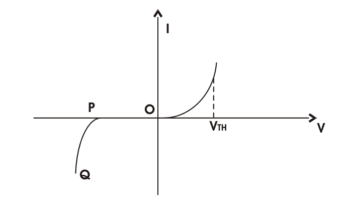

P-N junction diode is the most fundamental and the simplest electronics device. When one side of an intrinsic semiconductor is doped with acceptor i.e, one side is made p-type by doping with n-type material, a p-n junction diode is formed. This is a two terminal device. It appeared in 1950’s.
P-N junction can be step graded or linearly graded. In step graded the concentration of dopants both, in n - side and in p - side are constant up to the junction. But in linearly graded junction, the doping concentration varies almost linearly with the distance from the junction.
When the P-N diode is in unbiased condition that is no voltage is applied across it, electrons will defuse through the junction to p - side and holes will defuse through the junction to n - side and they combine with each other. Thus the acceptor atom near the p - side and donor atom near n – side are left unutilized. An electron field is generated by these uncovered charges. This opposes further diffusion of carriers. So, no movement of region is known as space charge or depletion region.
If, we apply forwards bias to the p-n junction diode. That means if positive side of the battery is connected to the p – side, then the depletion regions width decreases and carriers flow across the junction. If the bias is reversed the depletion width increases and no charge can flow across the junction.
P-N Junction Diode Characteristics
Let's a voltage V is applied across a p-n junction and total electric current I, flows through the junction. It is given as.
I = IS[exp(eV/ɳKBT) - 1]
Here, IS = reverse saturation current
e = charge of electron
ɳ = emission co-efficient
KB = Boltzmann constant
T = temperature
The electric current voltage characteristics plot is given below.
The electric current voltage characteristics
When V is positive the junction is forward biased and when V is negative, the junction is reversing biased. When V is negative and less than VTH, the electric current is very small. But when V exceeds VTH, the electric current suddenly becomes very high. The voltage VTH is known as threshold or cut in voltage. For Silicon diode VTH = 0.6 V.
At a reverse voltage corresponding to the point P, there is abrupt increment in reverse current. The PQ portion of the characteristics is known as breakdown region.
P-N Junction Band Diagram
p-n Junction Band Diagram
For an n-type semiconductor, the Fermi level EF lies near the conduction band edge. EC but for an p - type semiconductor, EF lies near the valance band edge EV
Now, when a p-n junction is built, the Fermi energy EF attains a constant value. In this scenario the p-sides conduction band edge. Similarly n–side valance band edge will be at higher level than Ecn, n-sides conduction band edge of p - side. This energy difference is known as barrier energy. The barrier energy is
EB = Ecp - Ecn = Evp - Evn
Band Diagram of p-n Junction Diode
If we apply forward bias voltage V, across junction then the barrier energy decreases by an amount of eV and if V is reverse bias is applied the barrier energy increases by eV.
Band diagram of forward biased p-n junction
Band diagram when reverse bias is applied
P-N Junction Diode Equation
The p-n junction diode equation for an ideal diode is given below
I = IS[exp(eV/KBT) - 1]
Here, IS = reverse saturation current
e = charge of electron
KB = Boltzmann constant
T = temperature
For a normal p-n junction diode, the equation becomes
I = IS[exp(eV/ɳKBT) - 1]
Here, ɳ = emission co-efficient, which is a number between 1 and 2, which typically increases as the electric current increases.
 by
by {kind=link}
{kind=link}
{kind=link}
{kind=link}
{kind=link}